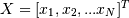
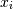
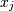
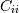
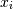
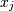
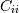
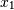
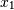

numpy.cov¶
- numpy.cov(m, y=None, rowvar=1, bias=0, ddof=None)[source]¶
Estimate a covariance matrix, given data.
Covariance indicates the level to which two variables vary together. If we examine N-dimensional samples, , then the covariance matrix element
 is the covariance of
 and . The element  is the variance
of .
is the covariance of
 and . The element  is the variance
of .Parameters : m : array_like
A 1-D or 2-D array containing multiple variables and observations. Each row of m represents a variable, and each column a single observation of all those variables. Also see rowvar below.
y : array_like, optional
An additional set of variables and observations. y has the same form as that of m.
rowvar : int, optional
If rowvar is non-zero (default), then each row represents a variable, with observations in the columns. Otherwise, the relationship is transposed: each column represents a variable, while the rows contain observations.
bias : int, optional
Default normalization is by (N - 1), where N is the number of observations given (unbiased estimate). If bias is 1, then normalization is by N. These values can be overridden by using the keyword ddof in numpy versions >= 1.5.
ddof : int, optional
New in version 1.5.
If not None normalization is by (N - ddof), where N is the number of observations; this overrides the value implied by bias. The default value is None.
Returns : out : ndarray
The covariance matrix of the variables.
See also
- corrcoef
- Normalized covariance matrix
Examples
Consider two variables,
 and , which
correlate perfectly, but in opposite directions:
and , which
correlate perfectly, but in opposite directions:>>> x = np.array([[0, 2], [1, 1], [2, 0]]).T >>> x array([[0, 1, 2], [2, 1, 0]])
Note how
increases while decreases. The covariance
matrix shows this clearly:>>> np.cov(x) array([[ 1., -1.], [-1., 1.]])
Note that element
 , which shows the correlation between
and , is negative.
, which shows the correlation between
and , is negative.Further, note how x and y are combined:
>>> x = [-2.1, -1, 4.3] >>> y = [3, 1.1, 0.12] >>> X = np.vstack((x,y)) >>> print np.cov(X) [[ 11.71 -4.286 ] [ -4.286 2.14413333]] >>> print np.cov(x, y) [[ 11.71 -4.286 ] [ -4.286 2.14413333]] >>> print np.cov(x) 11.71